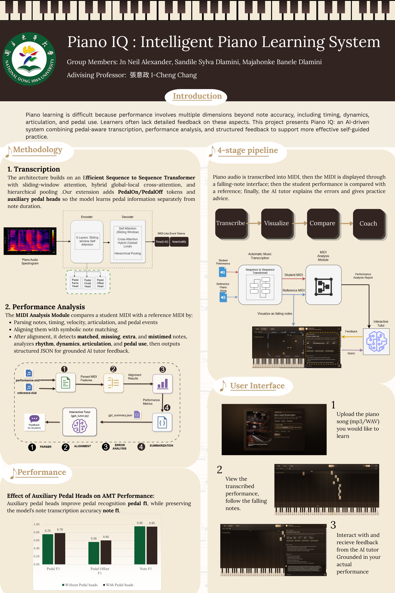

Piano IQ: Intelligent Piano Learning System

Piano IQ is my undergraduate capstone project, built together with two teammates and awarded the Excellent Award in Group D at the 114-2 undergraduate project exhibition. Automatic Music Transcription (AMT) converts piano audio into a symbolic MIDI sequence, but most existing systems represent sustain pedal use by artificially extending note durations, which obscures true key-release timing and can produce visually misleading MIDI, sometimes showing more simultaneous held keys than a pianist could physically play. Piano IQ addresses this with a pedal-aware sequence-to-sequence Transformer that introduces explicit PedalOn/PedalOff tokens and auxiliary prediction heads for pedal state, onset, and offset, keeping pedal behavior separate from note duration. This feeds a MIDI Analysis Module that aligns a student's performance against a reference recording, and an AI tutor that turns the resulting error analysis into natural-language, measure-specific feedback. Piano IQ is delivered as a fully functional, professionally designed web interface that carries the learner from file upload through transcription, falling-note visualization, and playback to performance comparison and AI tutor feedback, all in one cohesive workflow. The homepage, upload flow, piano learning workspace, and tutor panel were each built with a clean, consistent visual language, turning the underlying transcription and analysis pipeline into an accessible, guided practice environment rather than a collection of disconnected tools.

Piano IQ combines pedal-aware transcription, MIDI performance analysis, and AI tutor feedback into one learning platform. Its core contribution is a Transformer that represents sustain pedal activity with PedalOn/PedalOff tokens and auxiliary pedal heads, improving pedal recognition (F1 up from 75.37% to 78.52%) while adding only about 1.5k parameters and barely affecting note transcription accuracy. The MIDI Analysis Module then uses note alignment and structured JSON summarization to generate grounded, measure-specific feedback from the AI tutor.